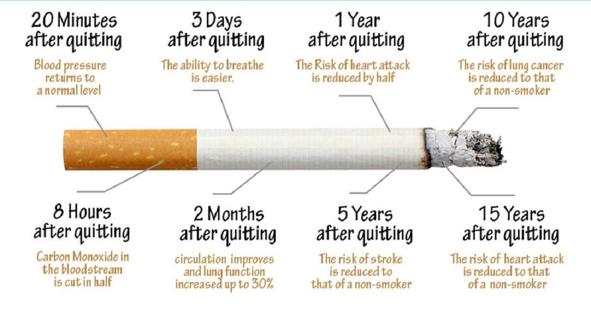

About the American Lung Association
The American Lung Association is the leading organization working to save lives by improving lung health and preventing lung disease, through research, education and advocacy. The work of the American Lung Association is focused on four strategic imperatives: to defeat lung cancer; to improve the air we breathe; to reduce the burden of lung disease on individuals and their families; and to eliminate tobacco use and tobacco-related diseases. For more information about the American Lung Association,( a holder of the Better Business Bureau Wise Giving Guide Seal), or to support the work it does, call 1-800-LUNGUSA (1-800-586-4872) or visit: Lung.org.
Better Breathers Club
Louisville, KY
BETTER BREATHERS CLUB MEETINGS
Norton Audubon Hospital | Louisville, KY
Register Now
Please use our online form to communicate your interest in joining the Better Breathers Club - Louisville, KY.
This Better Breathers Club will be held on the second Thursday of every month at the Norton Audubon Hospital in Louisville.
All Club sessions will run from 12:15 PM to 1:15 PM.
Norton Audubon Hospital
1 Audubon Plaza Dr. - Lower Level 1, Classroom 1
Louisville, KY 40217
Better Breathers Club
Living with a chronic lung disease can be easier. Better Breathers Clubs are welcoming support groups for individuals with
- COPD
- pulmonary fibrosis
- lung cancer
- their caregivers
.
Learn better ways to cope with lung disease while getting the support of others in similar situations. Led by a trained facilitator, these in-person adult support groups give you the tools you need to live the best quality of life you can.
Better Breathers Clubs meet regularly and feature educational presentations on a wide range of relevant topics, including:
- How COPD affects the lungs
- Breathing techniques
- Exercise
- Talking with your physician
- Medications and other treatment options
- Medical tests
- Supplemental oxygen
- Home healthcare
- Lung transplants
- Air pollution
You don't have to feel alone or isolated. It feels good to talk with others who understand—and that can have a positive impact on your health.
Do you want to quit smoking? That's half the battle. Now that you're taking this big step, we have lots of help available to get you ready to quit. Our proven tools, tips and support can help you end your addiction to tobacco and begin a new, smokefree phase of your life.
